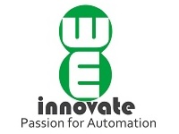
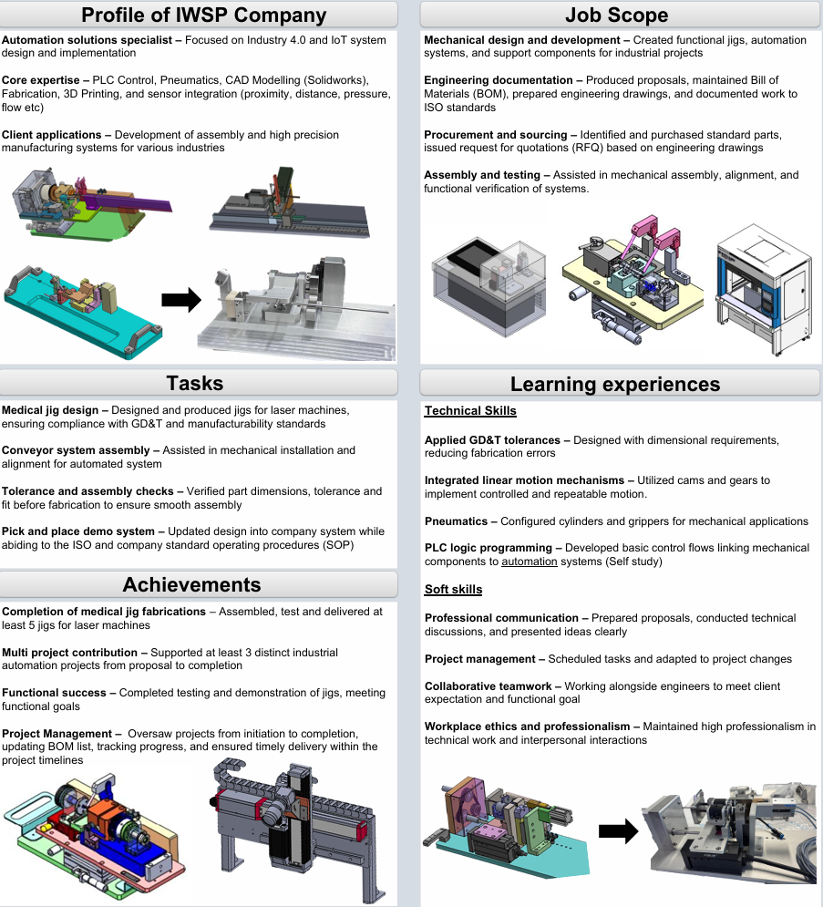
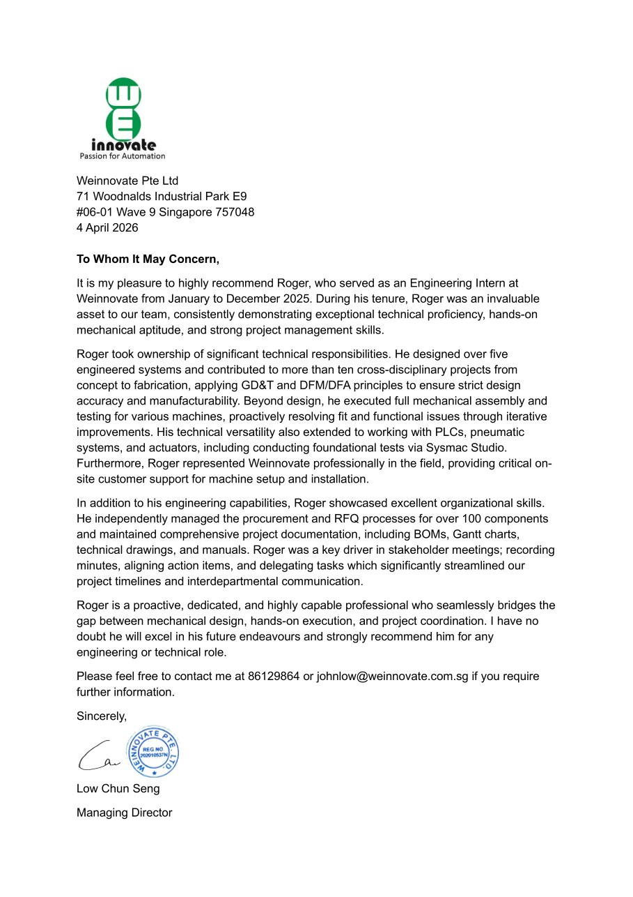
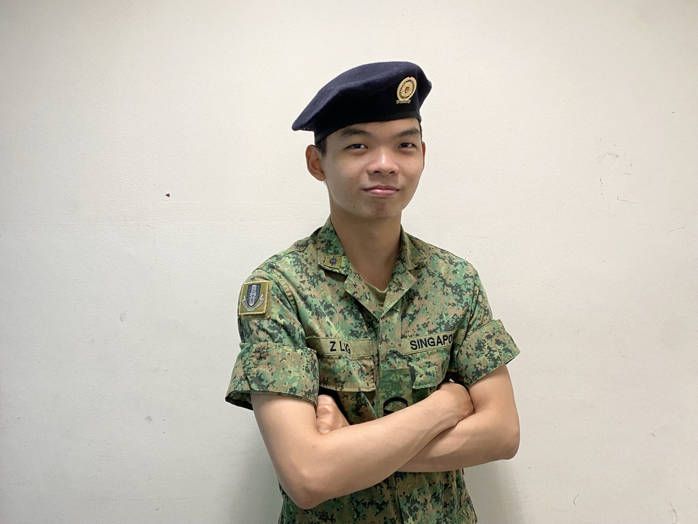
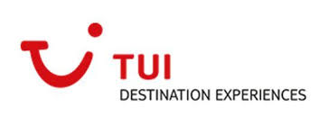
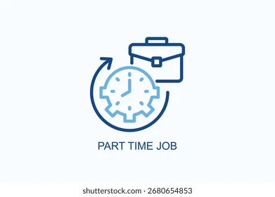
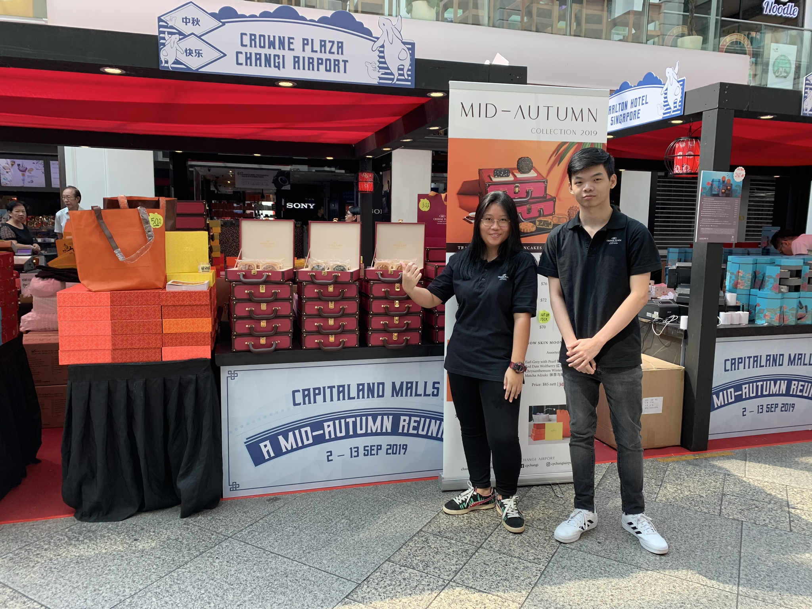
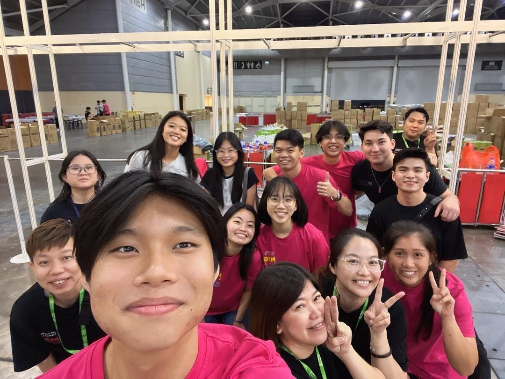
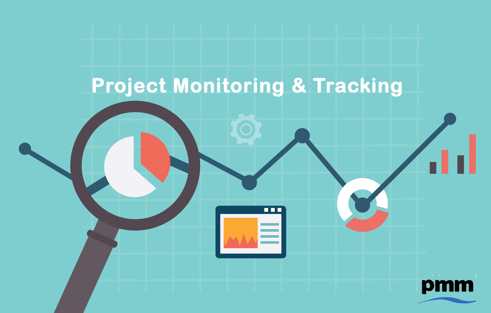
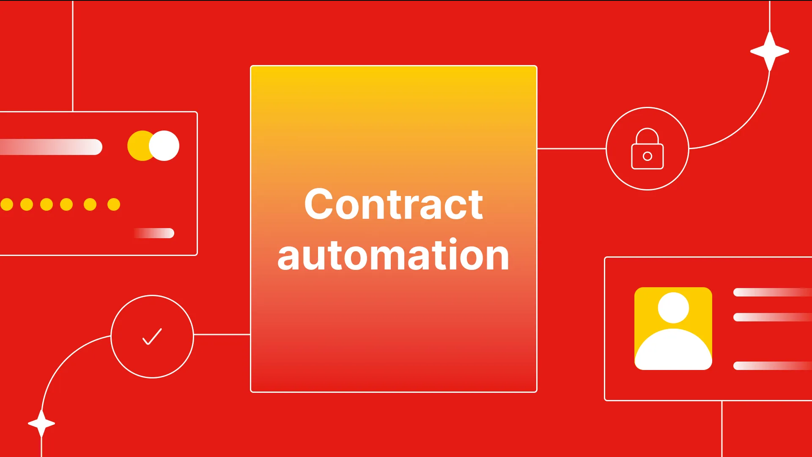

Engineering & design
SolidWorks
3D printing
Pneumatics
GD&T
DFM / DFA
ROS
Digital Portfolio
Digital Transformation Analyst and Systems Engineer. I specialize in identifying process bottlenecks and leveraging AI automation, rapid prototyping, and systems thinking to deploy real-world solutions.
About

Digital Transformation Analyst and Systems Engineer. I specialize in identifying process bottleneck and leveraging AI automation, rapid prototyping, and systems thinking to deploy real-world solutions. I translate stakeholder needs into governed digital delivery — workflows, integrations, and applications — with the same rigour I apply to requirements, interfaces, documentation, and training.
Capabilities
From AI-assisted build pipelines and workflow automation to physical prototyping — a toolkit shaped for transformation programmes, not just lab coursework.
Career
From systems internships to digital transformation ownership — shipping governed, documented change that stakeholders can run without heroics.



Click images to read and expand

Click images to read and expand




Click images to read and expand
Portfolio
Featured work in AI-accelerated delivery and governed automation. Hardware integration and university-era projects live on the Academic page.

Designed, generated, and deployed this static web portfolio using AI-driven tools (Cursor/Composer), reducing development time from weeks to hours.
The legacy student portfolio no longer matched a Digital Transformation Analyst storyline: the template was dated, the information architecture was rigid, and manually rewriting responsive HTML/CSS would burn weeks while still risking weak accessibility and inconsistent content.
I used Cursor/Composer as an implementation accelerator: structured prompts for semantic sections, design tokens, and DOM refactors, then reviewed every output for layout, contrast, and keyboard flow. The workflow treated the LLM as a pair programmer under explicit IA and brand constraints rather than a black-box author.
The result is this deployable, two-page static site — including CV preview and embedded inline case studies — produced in hours instead of a multi-week ground-up build, with interview-ready narrative and room to iterate as roles and proof points evolve.

Developed a centralized, role-gated web platform to track component lifecycles across multiple trades, integrating relational databases with n8n automated alerting.
The team was managing complex assembly lifecycles across multiple trades and modules using disjointed spreadsheets. This caused data silos, made cross-module referencing nearly impossible, and posed data security risks since everyone had the exact same visibility. Furthermore, critical workflows like user onboarding and status alerting were entirely manual.
I engineered a centralized web portal with strict Role-Based Access Control (RBAC), ensuring different trades and management tiers only saw the data and features relevant to their specific roles. To handle the complex production landscape, I designed the backend with strict pointer references, cleanly linking disparate modules, trades, and miscellaneous components so they aggregated correctly on the main dashboard.
Finally, to eliminate manual admin bottlenecks, I successfully introduced n8n webhooks to the architecture. This automated the generation and delivery of One-Time Passwords (OTPs) for secure new user onboarding and pushed real-time reporting alerts to stakeholders.
The system replaced static spreadsheets with a dynamic, secure, and fully relational application. Cross-trade dependencies are now cleanly visible on the dashboard, data access is safely compartmentalized by role, and automated n8n alerting ensures the team never misses a critical project update without needing manual intervention.

A full-stack enterprise application designed to fully digitize the manual contract stamping workflow, featuring bulk-processing, smart orientation sorting, and embedded cryptographic tracking.
The company relied on a highly manual process for contract execution: printing 100+ page documents, physically stamping every page, and scanning them back into the system for record-keeping. The process was slow, and tracking the authenticity and history of signatures—especially when multiple users signed the same document—was difficult and error-prone.
I built a full-stack platform (React/Django/PostgreSQL) linked directly to the company's HR portal via SSO. To handle massive, complex PDFs, I engineered a smart UI that automatically groups pages into tabs based on size and orientation. Users can now drop resizable signatures onto specific tabs, individual pages, or bulk-apply them across the document.
For security, I embedded an invisible, computer-readable cryptographic key into a separate PDF layer for every signature applied. This ensured that even if a second user stamped the document later, the tracking ID of the previous signer remained fully intact and traceable.
The system successfully eliminated the physical print-stamp-scan bottleneck, keeping all records purely digital and secure. Alongside the stamping tool, I deployed a dedicated verification portal allowing the company to instantly audit the cryptographic authenticity of any stamped PDF. Delivered as my first major company project, it massively improved operational cycle times and compliance tracking.
Open to roles in digital transformation, systems integration, and AI-governed automation. Reach out below.
Phone: +65 8993 7209
Prefer email for first contact — I typically reply within 1–2 business days.